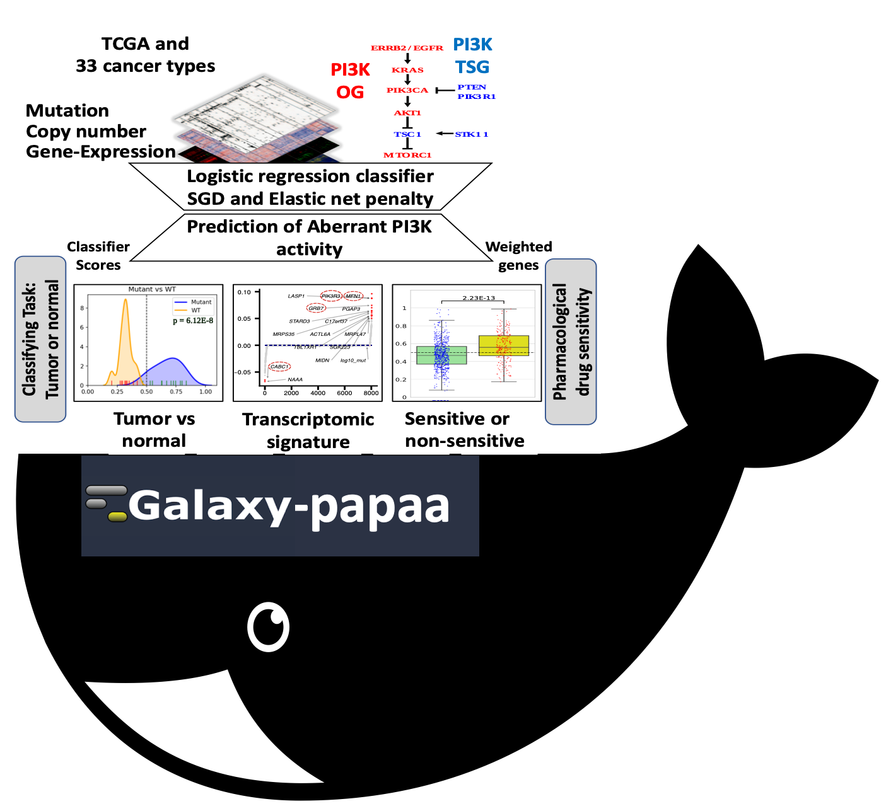

Welcome to galaxy-papaa docker!!!This repository is for installing and running a docker based galaxy instance with a machine learning approach to measure aberrant pathway activity for any given combination of genes and diseases from TCGA. We named this collection of tools as PanCancer Aberrant Pathway Activity Analysis (PAPAA) suite. To facilitate accessibility and generalized reuse, we have made these software tools available through both command-line interfaces as well as graphical user interfaces via incorporation into the Galaxy platform. Configuring Galaxy » GTN aberrant pi3k pathway analysis » link to the paper » Datasets descriptions » |

|